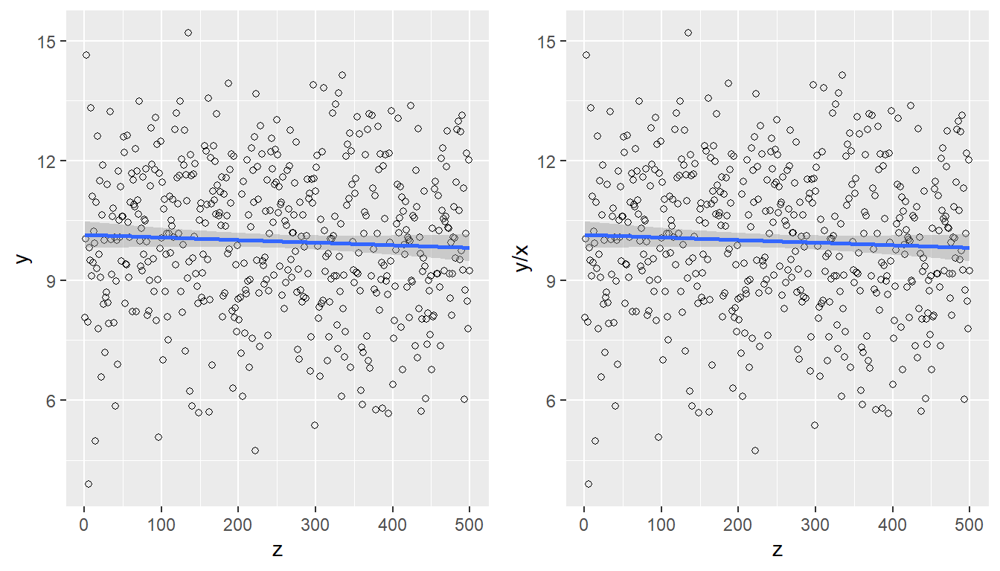

x <- c(32, 34, 46, 89, 35)
y <- c(52, 60, 75, 100, 50)9 Estimation with Auxiliary Information
Whether the data are useful in estimation will depend on the way in which \(\mathbf{x}\) is related to \(\mathbf{y}\). If the statistician’s knowledge and experience indicate that \(\mathbf{x}\) does indeed have a strong relationship with \(\mathbf{y}\), then the model begins to make sense. The more knowledge one has, the better the model that can be fitted. Kott et al. (2005)
The notions of finite-population inference were expressed more than 60 years ago in many classic books, such as those by Cochran, Hansen, Hurwitz and Madow, Deming, Muthy, Des Raj, and others. Sampling theory was applied from the perspective of randomized selection of possible samples from the finite population. Depending on practical circumstances, selection was carried out in different ways: simple random sampling, stratified random sampling, cluster sampling, two-stage sampling, and so on. Sampling was considered the primary activity, and estimation was never treated as a separate practice but rather as an automatic consequence. This was because each type of sampling design induced an estimator whose statistical properties, such as unbiasedness and variance, were established in advance by the design; hence, the variance was computable and estimable.
Thus, by the 1960s, many believed that research in sampling and finite-population inference was already dead, because new forms of sample selection would have to be invented, a difficult and demanding task beyond what was covered in classic sampling books. Although the ratio estimator was considered in some detail in the reference texts, the inclusion of several auxiliary information variables was not seen as a topic promising enough to justify a research path in that direction. In the 1970s, several authors shifted their epistemological perspective on finite-population inference. Basu, Brewer, Godambe, and Royall, among others, considered statistical models, in tune with classical Fisherian statistics, to be the true foundations of estimation and inference in finite populations. Their work was built around the possibility of inference depending strictly on the proposed model and having nothing to do with the sampling design used in data collection. As a consequence, attention turned toward estimation, and sampling was set aside in favor of the existing or proposed relationship between the characteristic of interest and the auxiliary information variables.
The path taken by the history of sampling was precisely the incorporation of the two schools of thought under a single umbrella. It became possible to combine classical randomization with a more general perception of the relationship between y and x. There was no need to sacrifice randomization-based principles. Thus, model-assisted design-based inference was born. This new type of inference became very attractive because regression and models accompany statisticians from their first courses and gain strength as they progress through university training. Thus, this “model-assisted” thinking is an effective and tolerant marriage that allows regression ideas to coexist with the randomization paradigm.
Jan Wretman Kott et al. (2005) argues that model fitting has become an integral part of classical sampling theory, although its principles must remain untouched because the properties of estimators are evaluated with respect to the probability mechanism that generates the sample, not with respect to any assumed model.
9.1 Introduction
In the previous chapters of this text, the reader was introduced to different sampling designs that, depending on the configuration of the values of the characteristic of interest, improve the efficiency of the Horvitz-Thompson or Hansen-Hurwitz estimators, as appropriate. On some occasions, the correct use of auxiliary information at the design stage dramatically improves estimator efficiency. For example, if the auxiliary information is categorical and is well correlated with the structural behavior of the characteristic of interest, a stratified sampling design may be used. Alternatively, if the auxiliary information available in the population is continuous, we can use a PPS or \(\pi\)PS sampling design to improve the precision of the estimates. In either case, it is necessary to:
- Know the values of the auxiliary information, whether continuous or categorical, for all elements that make up the population.
- Be certain that the characteristic of interest has a strong positive correlation with the auxiliary information.
In this chapter, the focus is on improving the efficiency of estimates by incorporating auxiliary information, categorical or continuous, into the estimator while holding the sampling design fixed. In other words, we want to use auxiliary information at the estimation stage. For this purpose, it is necessary to:
- Rely on the researcher’s expertise in discerning and choosing the best sampling design for the configuration of the values of the characteristic of interest.
- Know that the characteristic of interest is well related to the auxiliary information. As will be seen later, strict knowledge of the auxiliary information values for all elements of the population is not required, although it is necessary to know these values for the sample, along with the population total of the auxiliary information in the population1.
Of course, the new estimators that incorporate auxiliary information aim to dramatically improve the efficiency of strategies for estimating population totals. In addition to this characteristic, many others relate to consistency and unbiasedness. However, an important characteristic of an estimator built from auxiliary information is given by the following definition.
ImportantDefinition
A sampling strategy is said to be representative with respect to the auxiliary information \(\mathbf{x}\) if and only if
\[ \hat{t}_S(\mathbf{x})=t_{\mathbf{x}}. \tag{9.1}\]
That is, if the estimator applied to the auxiliary variables exactly reproduces their population total.
The idea behind the representativeness principle of the strategy is that if the characteristic of interest is known to have a close linear relationship with the auxiliary information, then we can think of the following equality as holding:
\[ t_\mathbf{x}\approx t_y \]
and, under the preceding assumptions, an immediate consequence of this property is that
\[ \hat{t}_S(y)\approx t_y \]
Regardless of the sampling design used for sample selection, if the population total of the auxiliary variables, \(t_\mathbf{x}\), is known, this information can be used to construct an even more precise estimator. This chapter considers linear estimators of the form
\[ \hat{t}_S(y)=w_0+\sum_{k\in S}w_ky_k, \]
where the weights \(w_k\) may depend on the auxiliary information vector. It is clear that not all linear estimators satisfy the representativeness equation. For example, the Horvitz-Thompson estimator is unbiased but does not use auxiliary information, and therefore does not satisfy the representativeness equation for the auxiliary information. However, theoretically it is not difficult to show that, using a fixed sample-size sampling design, the estimator \(\hat{t}_{y\pi}\) yields a representative strategy over the vector of inclusion probabilities \(\pi_1, \ldots, \pi_N\).
If \(\hat{t}_{y,\pi}\) and \(\hat{t}_{\mathbf{x},\pi}\) are the Horvitz-Thompson estimators of \(y\) and \(\mathbf{x}\), respectively, then it is possible to construct new estimators that, regardless of the sampling design, yield representative strategies over the auxiliary information vector \(\mathbf{x}\). Under these conditions, the precision of the estimation is ensured through the following result.
TipResult
If the estimator \(\hat{t}_S(\cdot)\) induces a representative strategy over the auxiliary information vector \(\mathbf{x}\) such that (equation 9.1) is satisfied, then \(\hat{t}_S(\mathbf{x})\) estimates the total \(t_{\mathbf{x}}\) with zero variance.
Proof. If (equation 9.1) holds, then \[ \begin{aligned} Var(\hat{t}_S(\mathbf{x}))=Var(t_\mathbf{x})=0 \end{aligned} \] Note that the operator \(Var(\cdot)\) is calculated over all possible samples in the support \(Q\) induced by the sampling design. That is, for all samples belonging to \(Q\), the estimator \(\mathbf{\hat{t}}_S(\mathbf{x})\) will reproduce the total \(\mathbf{t}_\mathbf{x}\).
This result is very important because, if the characteristic of interest is indeed related to the auxiliary information, then \(\hat{t}_S(y)\) will tend to have a very small variance.
It is now time to discuss incorporating auxiliary information into the estimator. How can this information be introduced into a mathematical expression that attempts to estimate a parameter? The answer is simple and clear: through a superpopulation model \(\xi\).
9.2 General regression estimator
This section constructs an estimator of the population total of the characteristic of interest \(t_y\) that dramatically improves efficiency by incorporating auxiliary information. This incorporation is carried out by assuming that the auxiliary information variables are related to the characteristic of interest through a model \(\xi\). This model is a general linear model and gives its name to the estimator proposed in this chapter. Thus, if there are \(N\) random variables \(Y_1,Y_2,\ldots,Y_N\) and a vector of random variables \(\mathbf{X}_1,\mathbf{X}_2,\ldots,\mathbf{X}_N\), and if the relationship between these random variables is given by a superpopulation model such that:
\[ Y_k=\mathbf{X}_k'\boldsymbol{\beta}+\varepsilon_k \]
where each of the \(\varepsilon_k\), \(k\in U\), are independent and identically distributed random variables with mean zero and variance \(c_k\sigma^2\), such that: \[ \begin{aligned} E_{\xi}(Y_k)&=\mathbf{X}_k'\boldsymbol{\beta} \\ Var_{\xi}(Y_k)&=c_k\sigma^2. \end{aligned} \]
By considering this general model, it is possible to construct an estimator of the population total that accounts for this relationship.
9.2.1 Construction
Let \(U\) be the set of elements in the finite population and S the set of elements that make up the random sample. Let \(y_k\), \(k\in S\), and \(\mathbf{x}_{k}\), \(k\in U\), be the values of the characteristic of interest y and the auxiliary information vector associated with the k-th element of the population. With \(\pi_k\) denoting the first-order inclusion probability, assume that the population totals of the auxiliary information \(\mathbf{t}_{\mathbf{x}}=\sum_{k \in U}\mathbf{x_k}\) are known.
In general, it is assumed that there is a relationship between the variable of interest and the auxiliary information through the superpopulation model \(\xi\). That is, \[ y_k=f(x_{1k}, x_{2k}, \ldots, x_{pk})+E_k \]
In particular, under \(\xi\) there is a linear relationship between \(y_k\) and \(\mathbf{x_k}\). Therefore, in the finite population, \[ \begin{aligned} y_k&=\mathbf{x}_k'\mathbf{B}+E_k\\ &=y_kº+E_k \end{aligned} \]
Then the population parameter to be estimated can be written as \[ \begin{aligned} t_y&=\sum_U(y_kº+y_k-y_kº)\\ &=\sum_U\mathbf{x}_k'\mathbf{B}+\sum_U(y_k-y_kº)\\ &=\sum_U\mathbf{x}_k'\mathbf{B}+\sum_UE_k\\ &=\sum_Uy_kº+\sum_UE_k \end{aligned} \]
Because the goal is to estimate \(t_y\) with the data supplied in the sample, two quantities must be estimated. The first is \(\mathbf{B}\), which corresponds to a vector of regression coefficients and can be estimated following the principles of the previous chapter. The second quantity is the total \(t_E\), which can be estimated using the principles of the Horvitz-Thompson estimator. This gives the construction of the general regression estimator.
ImportantDefinition
The general regression estimator is defined by the following expression: \[ \begin{aligned} \hat{t}_{y,greg}&=\sum_U\mathbf{x}_k'\mathbf{\hat{B}}+\sum_s\frac{y_k-\mathbf{x}_k'\mathbf{\hat{B}}}{\pi_k} \end{aligned} \]
Expanding the expression of the general regression estimator and factoring conveniently, we obtain that the general regression estimator can be written as:
\[ \begin{aligned} \hat{t}_{y,greg}&=\sum_U\mathbf{x}_k'\mathbf{\hat{B}}+\sum_s\frac{y_k}{\pi_k}-\sum_s\frac{\mathbf{x}_k'\mathbf{\hat{B}}}{\pi_k}\\ &=\hat{t}_{y\pi}+\sum_{j=1}^J\hat{B}_j(t_{xj}-\hat{t}_{xj\pi}) \end{aligned} \]
In matrix form, this can be written as:
\[ \begin{aligned} \hat{t}_{y,greg}&=\hat{t}_{y\pi}+(\mathbf{t}_{\mathbf{x}}-\hat{\mathbf{t}}_{\mathbf{x}\pi})'\mathbf{\hat{B}} \end{aligned} \]
Since the estimator of \(\mathbf{B}\) was found using the least squares technique, then
\[ \hat{\mathbf{B}}=\hat{\mathbf{T}}^{-1}\hat{\mathbf{t}} \] where \[ \begin{aligned} \mathbf{\widehat{T}}=\sum_S\dfrac{\mathbf{x}_k\mathbf{x}_k'}{\pi_kc_k} \end{aligned} \] and \[ \begin{aligned} \mathbf{\hat{t}}=\sum_S\dfrac{\mathbf{x}_ky_k}{\pi_kc_k} \end{aligned} \]
Therefore, by decomposing \(\mathbf{\hat{B}}\), the estimator takes the following form:
\[ \begin{aligned} \hat{t}_{y,greg}&=\sum_s\frac{y_k}{\pi_k}+(\mathbf{t}_{\mathbf{x}}-\hat{\mathbf{t}}_{\mathbf{x}\pi})'\mathbf{T}^{-1}\sum_s\frac{\mathbf{x}_ky_k}{c_k\pi_k}\\ &=\sum_s\left(1+(\mathbf{t}_{\mathbf{x}}-\hat{\mathbf{t}}_{\mathbf{x}\pi})'\mathbf{T}^{-1}\frac{\mathbf{x}_k}{c_k}\right)\frac{y_k}{\pi_k}\\ &=\sum_sg_{ks}\frac{y_k}{\pi_k} \end{aligned} \]
Therefore, there are different ways to write the same estimator; the last expressions are particularly useful because the weights \(g_{ks}\) have the property of inducing representative strategies over any variable of the auxiliary vector. That is, when the weights are applied to an auxiliary information variable in the sample, the result is the population total of that variable.
\[ \hat{\mathbf{t}}_{\mathbf{x},greg}=\sum_Sg_{ks}\frac{\mathbf{x}_k'}{\pi_k}=\mathbf{t}_{\mathbf{x}} \]
Returning to the introduction of this chapter, we can conclude that the general regression estimator is a linear estimator with \(w_0=0\) and \(w_k=\frac{g_{ks}}{\pi_k}\). Thus,
\[ \begin{aligned} \hat{t}_{y,greg}&=\sum_Sw_ky_k\\ &=\sum_Sg_{ks}\frac{y_k}{\pi_k} \end{aligned} \]
con
\[ g_{ks}=1+(\mathbf{t}_{\mathbf{x}}-\hat{\mathbf{t}}_{\mathbf{x}\pi})'\mathbf{T}^{-1}\frac{\mathbf{x}_k}{c_k} \]
The weights \(w_k\) are known as calibration weights and are widely used in the construction of model-assisted estimators in superpopulation models. Thus, using the calibrated weights, the model-assisted estimator is given by
\[ \hat{t}_{y,cal}=\sum_{k\in S} w_ky_k. \]
Note that one property of calibration weights is that the estimator of the auxiliary information exactly reproduces its population totals. Thus, we have
\[ t_{x,cal}=\sum_{k\in S} w_kx_k=t_x. \]
TipResult
For any sampling design, the estimator \(\widehat{t}_{y,greg}\) induces a representative strategy over the vector of auxiliary variables. That is,
\[ \mathbf{\widehat{t}}_{\mathbf{x},greg}=\mathbf{t}_{\mathbf{x}} \]
Proof. Using the matrix form of the general regression estimator given by expression (9.2.11), we have \[ \begin{aligned} \mathbf{\widehat{t}}_{\mathbf{x},greg}&=\hat{\mathbf{t}}_{\mathbf{x}\pi}+(\mathbf{t}_{\mathbf{x}}-\hat{\mathbf{t}}_{\mathbf{x}\pi})'\mathbf{\hat{B}} \end{aligned} \]
However, \(\mathbf{\hat{B}}\) will be the regression coefficients, fitted by least squares, of the auxiliary information against itself. Therefore, it will be an identity matrix. This is clear when developed; therefore,
\[ \begin{aligned} \mathbf{\hat{B}}=\mathbf{\widehat{T}}^{-1}\mathbf{\widehat{T}}= \left(\sum_S\dfrac{\mathbf{x}_k\mathbf{x}_k'}{\pi_kc_k}\right)^{-1}\left(\sum_S\dfrac{\mathbf{x}_k\mathbf{x}_k'}{\pi_kc_k}\right)=\mathbf{I}_{p\times p} \end{aligned} \]
Then the general regression estimator of the vector of auxiliary information totals will be
\[ \begin{aligned} \mathbf{\widehat{t}}_{\mathbf{x},greg}&=\hat{\mathbf{t}}_{\mathbf{x}\pi}+ (\mathbf{t}_{\mathbf{x}}-\hat{\mathbf{t}}_{\mathbf{x}\pi})'\mathbf{I}_{p\times p}\\ &=\hat{\mathbf{t}}_{\mathbf{x}\pi}+\mathbf{t}_{\mathbf{x}}-\hat{\mathbf{t}}_{\mathbf{x}\pi}\\ &=\mathbf{t}_{\mathbf{x}} \end{aligned} \]
It is important to emphasize that the structural configuration of the calibration weights depends on
- The superpopulation model and its conditions for estimating the regression parameters. That is, the form of the model itself (with or without intercept and the number of auxiliary information variables) and the variance structure (the value taken by \(c_k\)).
- The vector of inclusion probabilities in the sample.
- The realized sample. For each possible sample in the support defined by the sampling design, there is a different configuration of calibration weights.
NoteExample
Returning to our example population \(U\), suppose that the superpopulation model \(\xi\) is such that
\[ Y_k=\beta_0+\beta_1X_k+\varepsilon_k \]
where each of the \(\varepsilon_k\), \(k\in U\), are independent and identically distributed random variables with mean zero and constant variance structure. The values of the characteristic of interest and the continuous auxiliary information are shown below.
Using a simple random sampling design, a sample of size \(n=4\) is selected. Of course, this sampling design induces inclusion probabilities pik for each of the elements.
sam <- sample(5, 4)
pik <- rep(4 / 5, 5)Suppose that the realized sample is given by elements 1, 2, 3, and 5 of the population, corresponding to Yves, Ken, Erik, Leslie. The values of y, x, and pik for each of the elements in the sample are given by
x.s <- x[sam]
y.s <- y[sam]
pik.s <- pik[sam]With the help of the Wk function from the TeachingSampling package, it is possible to calculate calibration weights for the elements selected in the sample. This function has five arguments, described below: x, the auxiliary information matrix containing, for each sample element, the values of the continuous or discrete auxiliary information. This argument may be a vector, in the case of a single auxiliary information variable, or a matrix, in the case of multiple auxiliary information. tx is the vector of population totals, assumed to be known, of the auxiliary information. pik is the vector of inclusion probabilities for the elements included in the sample. b0, which by default takes the value FALSE, indicates that the model was proposed without an intercept. Otherwise, if the proposed model contains an intercept, b0 must take the value TRUE. The last argument of the function is ck, which refers to the variance structure of the model. ck takes the value 1 by default. If the variance structure is like that of the ratio model, then ck should be the same vector introduced in the x argument.
Thus, the Wk function from the TeachingSampling package is used to find the calibration weights. Note that because the model was proposed with an intercept, the first column of the design matrix contains only ones; therefore, the tx argument must be a vector containing the population total and the total of the auxiliary information variable, that is, tx=c(5,236). Because the variance structure is constant, ck takes the value one.
w <- Wk(x.s, tx = c(5, 236), pik.s, ck = 1, b0 = TRUE)
w [,1]
[1,] 1.30
[2,] 0.89
[3,] 1.41
[4,] 1.40This gives the calibrated weights, whose pleasant property is that they reproduce the exact population total of the auxiliary information.
sum(x.s * w)[1] 236sum(y.s * w)[1] 341However, if the model \(\xi\) had been formulated differently, for example:
\[ Y_k=\beta_1X_k+\varepsilon_k \]
where each of the \(\varepsilon_k\), \(k\in U\), are independent and identically distributed random variables with mean zero and constant variance structure. Then the arguments in the Wk function from the TeachingSampling package must change, so that
w <- Wk(x.s, tx = 236, pik.s, ck = 1, b0 = FALSE)
w [,1]
[1,] 1.2
[2,] 1.1
[3,] 1.2
[4,] 1.2Note that although the model changes, the calibration property is maintained under different weight configurations.
sum(x.s * w)[1] 236sum(y.s * w)[1] 332For this superpopulation model, carry out a lexical-graphic exercise over all possible simple random samples of size \(n=4\), calculating the calibration weights and verifying the representativeness property over the auxiliary information vector.
9.2.2 Other properties of the general regression estimator
On the other hand, using the definition of the general regression estimator, it takes the following form:
\[ \begin{aligned} \hat{t}_{y,greg}&=\sum_U\mathbf{x}_k'\mathbf{\hat{B}}+\sum_s\frac{y_k-\mathbf{x}_k'\mathbf{\hat{B}}}{\pi_k}\\ &=\sum_U\hat{y}_k+\sum_s\frac{e_k}{\pi_k} \end{aligned} \]
On some occasions, the model \(\xi\) that establishes the relationship between the characteristic of interest and the auxiliary information is such that
\[ \begin{aligned} \sum_s\frac{e_k}{\pi_k}=0. \end{aligned} \]
If the preceding equation is satisfied, then the general regression estimator would take the much simpler form given by
\[ \begin{aligned} \hat{t}_{y,greg}&=\sum_U\hat{y}_k\\ &=\sum_U\mathbf{x}_k'\mathbf{\hat{B}}\\ &=\mathbf{t'_x}\mathbf{\hat{B}} \end{aligned} \]
Thus, only the vector of population totals of the auxiliary information variables \(\mathbf{t}_{\mathbf{x}}\), which may be available from some administrative entity, and the values taken by the characteristic of interest and the auxiliary information vector, \(y_k\) and \(\mathbf{x}_k\), respectively, in the realized sample would be needed.
TipResult
A sufficient condition for \[ \begin{aligned} \sum_s\frac{e_k}{\pi_k}=0. \end{aligned} \] is that there exists a vector \(\mathbf{v}\) such that \[ \begin{aligned} \mathbf{v}'\mathbf{x}_k=c_k. \end{aligned} \]
Proof. If equation (9.2.21) is satisfied, then
\[ \begin{aligned} \sum_S\frac{e_k}{\pi_k}&=\sum_S\frac{1}{\pi_k}\left(y_k-\mathbf{x}_k'\mathbf{\hat{B}}\right)\\ &=\sum_S\frac{1}{\pi_k}\left(y_k-\frac{\mathbf{v}'\mathbf{x}_k}{c_k}\mathbf{x}_k'\mathbf{\hat{B}}\right)\\ &=\hat{t}_{y,\pi}-\mathbf{v}'\left(\sum_S\frac{\mathbf{x}_k\mathbf{x}_k'}{\pi_kc_k}\right)\mathbf{\hat{T}}^{-1}\mathbf{\widehat{t}}\\ &=\hat{t}_{y,\pi}-\sum_S\frac{\mathbf{v}'\mathbf{x}_ky_k}{\pi_kc_k}\\ &=\hat{t}_{y,\pi}-\hat{t}_{y,\pi}=0 \end{aligned} \]
Särndal et al. (1992) state that some examples of variance structures that satisfy equation (9.2.21) are:
- Linear regression model with intercept \(x_{1k}=1\) \(\forall k\in U\) and constant variance structure \(c_k=1\).
- Linear regression model with variance structure proportional to some variable in the auxiliary information vector. That is, \[ \sigma^2c_k\propto x_{jk} \] for some \(j=1,\ldots,p\) and for all \(k\in U\).
- Linear regression model with variance structure proportional to a linear combination of the auxiliary information variables. That is, \[ \sigma^2c_k\propto \sum_{j=1}^pa_jx_{jk} \] for all \(k\in U\) and some constants \(a_1,\ldots,a_p\).
Regarding the philosophy surrounding the model \(\xi\) in the regression estimator, Särndal et al. (1992) state that the role played by this model is limited to describing, not explaining, the point cloud in the finite population. They argue that the proposed model is expected to fit reasonably well and to suggest that it could have generated the particular behavior of the characteristic of interest. Note that the assumption is flexible and does not require certainty that the model truly generated the values of \(y\). Therefore, although the model induces randomness per se, the conclusions of the estimates are independent of it. Moreover, the model \(\xi\) is a vehicle for finding a mathematical expression that allows the regression coefficients to be estimated, and the efficiency of \(\hat{t}_{y,greg}\) compared with that of the Horvitz-Thompson estimator will depend on the goodness of fit induced by the assumed model. However, it does not depend in any way on whether the model is true or not. Therefore, all types of inference about the estimator are based on the sampling design and not on the assumed model.
Under the preceding argument, it is necessary to calculate and estimate the variance of the general regression estimator from a sampling-design-based perspective. Thus, following the guidelines of Section 8.1.1 on the Taylor linearization technique, we have the following result.
TipResult
The general regression estimator is approximately unbiased for the population total of the characteristic of interest \(t_y\). In addition, the variance approximation and the estimated variance of the general regression estimator are given by
\[ AVar(\hat{t}_{y,greg})=\sum\sum_U\Delta_{kl}\frac{E_k}{\pi_k}\frac{E_l}{\pi_l}. \] \[ \widehat{Var}(\hat{t}_{y,greg})=\sum\sum_S \dfrac{\Delta_{kl}}{\pi_{kl}}\frac{e_k}{\pi_k}\frac{e_l}{\pi_l} \]
respectively, where \(E_k=y_k-\mathbf{x}_k'\mathbf{B}\) are the errors in the finite population and \(e_k=y_k-\mathbf{x}_k'\mathbf{\hat{B}}\) are the errors in the selected sample.
Proof. Following the steps of Taylor linearization, we must express the estimator as a function of totals.
\[ \begin{aligned} \hat{t}_{y,greg}&=\hat{t}_{y\pi}+(\mathbf{t}_{\mathbf{x}}-\hat{\mathbf{t}}_{\mathbf{x}\pi})'\mathbf{\hat{B}}\\ &=f(\hat{t}_{y\pi},\hat{\mathbf{t}}_{\mathbf{x}\pi},\hat{\mathbf{T}},\hat{\mathbf{t}}) \end{aligned} \]
Note that \[ \left.\frac{\partial f}{\partial\hat{\mathbf{T}}}\right|_{\hat{t}_{y\pi}=t_y,\hat{\mathbf{t}}_{\mathbf{x}\pi}\mathbf{t}_{\mathbf{x}},\hat{\mathbf{T}} =\mathbf{T},\hat{\mathbf{t}}=\mathbf{t}} =(\mathbf{t}_{\mathbf{x}}-\hat{\mathbf{t}}_{\mathbf{x}\pi})' \left.\frac{\partial\hat{\mathbf{B}}}{\partial}\right|_{\hat{t}_{y\pi} =t_y,\hat{\mathbf{t}}_{\mathbf{x}\pi}\mathbf{t}_{\mathbf{x}},\hat{\mathbf{T}} =\mathbf{T},\hat{\mathbf{t}}=\mathbf{t}}=\mathbf{0} \]
and analogously, we have \[ \left.\frac{\partial f}{\partial\hat{\mathbf{t}}}\right|_{\hat{t}_{y\pi}=t_y, \hat{\mathbf{t}}_{\mathbf{x}\pi}=\mathbf{t}_{\mathbf{x}}, \hat{\mathbf{T}}=\mathbf{T}, \hat{\mathbf{t}}=\mathbf{t}} =(\mathbf{t}_{\mathbf{x}}-\hat{t}_{\mathbf{x}\pi})' \left.\frac{\partial\hat{\mathbf{B}}}{\partial}\right|_{\hat{\mathbf{t}}_{y\pi}=t_y, \hat{\mathbf{t}}_{\mathbf{x}\pi}=\mathbf{t}_{\mathbf{x}}, \hat{\mathbf{T}}=\mathbf{T}, \hat{\mathbf{t}}=\mathbf{t}} =\mathbf{0}. \]
Consequently, only the derivatives of \(f\) with respect to \(\hat{t}_{y\pi}\) and \(\hat{\mathbf{t}}_{\mathbf{x}\pi}\) are calculated, and we have
\[ \begin{aligned} a_1&=\left.\dfrac{\partial f(\hat{t}_{y\pi},\hat{\mathbf{t}}_{\mathbf{x}\pi})}{\partial \hat{t}_{y\pi}}\right|_{\hat{t}_{y\pi}=t_y,\hat{\mathbf{t}}_{\mathbf{x}\pi}=\mathbf{t}_{\mathbf{x}},\hat{\mathbf{T}} =\mathbf{T},\hat{\mathbf{t}}=\mathbf{t}}\\ &=1\\ a_2&=\left.\dfrac{\partial f(\hat{t}_{y\pi},\hat{\mathbf{t}}_{\mathbf{x}\pi})}{\partial \hat{\mathbf{t}}_{\mathbf{x}\pi}}\right|_{\hat{t}_{y\pi}=t_y,\hat{\mathbf{t}}_{\mathbf{x}\pi}=\mathbf{t}_{\mathbf{x}},\hat{\mathbf{T}} =\mathbf{T},\hat{\mathbf{t}}=\mathbf{t}}\\\\ &=-\left.\hat{\mathbf{B}}'\right|_{\hat{t}_{y\pi}=t_y,\hat{\mathbf{t}}_{\mathbf{x}\pi}=\mathbf{t}_{\mathbf{x}},\hat{\mathbf{T}} =\mathbf{T},\hat{\mathbf{t}}=\mathbf{t}}\\ &=-\mathbf{B}' \end{aligned} \]
Therefore, we have \[ \hat{t}_{y,greg}\cong t_y+(\hat{t}_{y\pi}-t_y)- \mathbf{B}'(\hat{\mathbf{t}}_{\mathbf{x}\pi}-\hat{\mathbf{t}}_{\mathbf{x}}), \] and, taking expectations, \(E(\hat{t}_{y,greg})\cong t_y\).
Defining the new linearized variable given by expression (8.1.14), we have \[ \begin{aligned} E_k=y_k-\mathbf{x}_k'\mathbf{B} \end{aligned} \]
whose approximation with the data collected in the sample is \[ \begin{aligned} e_k=y_k-\mathbf{x}_k'\mathbf{\widehat{B}} \end{aligned} \]
Therefore, using Result 8.1.3, the variance is written as
\[ AVar(\hat{t}_{y,greg})=Var\left(\sum_S\frac{E_k}{\pi_k}\right) \]
Using the principles of the Horvitz-Thompson estimator leads to the results for the variance approximation and the estimated variance.
Särndal et al. (1992) propose a variance estimator that incorporates the weights \(g_{ks}\). The motivation for this new variance estimator is that one way to write the general regression estimator is
\[ \hat{t}_{y,greg}=\sum_Uy_kº+\sum_S\frac{g_{ks}E_k}{\pi_k} \]
Therefore, when calculating its variance, we have
\[ \begin{aligned} Var\left(\hat{t}_{y,greg}\right)&=Var\left(\sum_Uy_kº+\sum_S\frac{g_{ks}E_k}{\pi_k}\right)\\ &=Var\left(\sum_S\frac{g_{ks}E_k}{\pi_k}\right) \end{aligned} \]
Using the principles of the Horvitz-Thompson estimator, an alternative estimator for the variance of the general regression estimator is given by
\[ \widehat{Var}(\hat{t}_{y,greg})=\sum\sum_S \dfrac{\Delta_{kl}}{\pi_{kl}}\frac{g_{ks}e_k}{\pi_k}\frac{g_{ls}e_l}{\pi_l} \]
The reader should be very clear that the unbiasedness property does not apply to this class of estimators. However, when the sample size and population size are large, the bias of the general regression estimator is negligible. Great care must be taken with small samples, especially when carrying out confidence-interval estimation. Särndal et al. (1992) state in this regard that, although bias affects the validity of the confidence intervals generated with the general regression estimator, it is valid to use the following confidence interval
\[ \hat{t}_{y,greg} \pm z_{1-\alpha/2}\sqrt{\widehat{Var}(\hat{t}_{y,greg})} \]
even when the sample size is modest.
TipResult
Under the family of SRS sampling designs, the general regression estimator is consistent in Cochran’s sense. That is, if \(s=U\), then \[ \hat{t}_{y,greg}=t_y \]
Up to this point, we have defined the general regression estimator as an attempt to reconcile classical model theory with finite-population sampling. This estimator has gained much ground in recent decades, and its use, given its desirable properties, continues to grow over time. However, the general regression estimator is the result of decades of theoretical development and construction of model-assisted estimators that are special cases of it.
In the next sections, we study each of the special cases most commonly used in practice. The reader should note that each of the estimators appearing in the following sections was originally proposed without considering a superpopulation model, but rather with purely empirical motivation. However, as will be seen in the development of the following sections, all these estimators are covered by the principles of the general regression estimator and by the regression coefficients induced by the model.
To conclude the presentation of the general regression estimator, the reader should note that this estimator is completely useless in practice. In other words, its vast generality makes it unusable. As in any statistical process, the general model and its corresponding mathematical expressions are meaningless without knowledge of the particular behavior of each characteristic of interest. With this statement, I do not intend to discourage the reader. On the contrary, when the statistician understands what a superpopulation model is and obtains a particular estimator according to the behavior of the study population, the efficiency gain is tremendous.
The following sections give particular examples of the regression estimator when the model governing the finite population has already been specified. Note that every estimator presented below is a special case of the general regression estimator. Of course, each receives a specific name, which in most cases depends on the model governing the particular population.
On each of the following pages, the reader should keep in mind the spirit of the general regression estimator as a family that covers special cases of estimators. Each estimator reviewed in this chapter arose under its own specifications, which characterized it in a singular way. Therefore, the historical development of each was not originally founded as a special case of some other estimator. The ratio estimator, the regression estimator, the post-stratification estimator, among others, were conceived separately from the idea of linear models. Their creators were not thinking about calculating or estimating a regression coefficient. Of course, over time and with advances in the statistical theory of linear models, a family was created that unifies all the estimators in this chapter into a single general estimator.
9.3 Common mean estimator
Recall that constructing the sampling strategy is the most important task before conducting any sampling study. However, it must be recognized that each possible sampling strategy has advantages and disadvantages compared with the others. Suppose that the proposed sampling design consists of a Bernoulli sampling design. What type of estimator is best for this sampling design? In theory, many unbiased estimators exist for this particular design, such as the Horvitz-Thompson estimator. However, from a practical point of view, it is possible that the sample realized or selected under this sampling design consists of every unit in the population. Under this scenario, the Horvitz-Thompson estimator offers no advantage, because the estimate for the population total will be completely wrong, equal to \(t_y/\pi\) and strictly greater than \(t_y\).
As seen in previous chapters, although the probability that the selected or realized sample contains all population units may be small, the alternative estimator of the population total, given in expression (2.2.17), provides a better option than the Horvitz-Thompson estimator. This alternative estimator is known as the common mean estimator and is motivated by the common mean model, which assumes that the population behaves in the same way according to a common slope for each individual that composes it. Thus \(p=1\), \(\mathbf{x}_k=1\), and \(c_k=1\) for all \(k\in U\). The superpopulation model formulation is given by
\[ Y_k=\beta+\varepsilon_k \]
where each of the \(\varepsilon_k\), \(k\in U\), are independent and identically distributed random variables with mean zero and variance \(\sigma^2\). As a result, we have
\[ \begin{aligned} E_{\xi}(Y_k)&=\beta \\ Var_{\xi}(Y_k)&=\sigma^2. \end{aligned} \]
At first glance, the estimator resulting from the preceding model is no better than the Horvitz-Thompson estimator, because the auxiliary information is always constant. However, the resulting estimator is often better than the Horvitz-Thompson estimator, as when the sampling strategy involves a Bernoulli-type sampling design. It is common to use the common mean estimator when the scatterplot between the characteristic of interest and the auxiliary information characteristic defines a constant regression line parallel to the horizontal axis. Of course, the quotient between these two characteristics will also define a scatterplot whose behavior is constant, with slight uniform deviations, as can be seen in the following figure.
N <- 500
b <- 10
sigma <- 2
z <- c(1:N)
x <- rep(1, N)
e <- rnorm(N, 0, sigma)
y <- b * x + e
data <- data.frame(z, y, x)
p1 <- ggplot(data, aes(x = z, y = y)) +
geom_point(shape = 1) +
geom_smooth(method = lm)
p2 <- ggplot(data, aes(x = z, y = y / x)) +
geom_point(shape = 1) +
geom_smooth(method = lm)
grid.arrange(p1, p2, ncol = 2)
If the entire finite population were available, the estimator of the regression coefficient \(\beta\) would be obtained by minimizing the following dispersion function:
\[ D=\sum_U \frac{\left(y_k-B \right)^2}{\sigma^2}. \]
Using Result 8.4.2 and equation (8.4.6), the estimator \(B\) in the finite population takes the following form: \[ B=\frac{t_y}{N}=\bar{y}_U \]
Of course, since in practice only a particular sample from the finite population is available, \(B\) must be estimated. Following Result 8.4.3, we arrive at the following expression: \[ \hat{B}=\frac{\hat{y}_{y,\pi}}{\hat{N}_{\pi}}=\widetilde{y}_S \]
With these tools, it is now possible to construct an estimator of the population total of the characteristic of interest, which is given by the following result.
TipResult
Under the common mean model, the estimator of the population total is given by \[ \hat{t}_{y,mc}=N\frac{\hat{t}_{y,\pi}}{\hat{N}_{\pi}}=N\widetilde{y}_S \] whose approximate variance is \[ AVar(\hat{t}_{y,mc})=\sum\sum_U\Delta_{kl}\frac{E_k}{\pi_k}\frac{E_l}{\pi_l}. \] with \[ \begin{aligned} E_k&=y_k-B\\ &=y_k-\frac{t_y}{N}=y_k-\bar{y}_U. \end{aligned} \] The variance estimator is \[ \widehat{Var}(\hat{t}_{y,greg})=\sum\sum_S \dfrac{\Delta_{kl}}{\pi_{kl}}\frac{e_k}{\pi_k}\frac{e_l}{\pi_l} \] with \[ \begin{aligned} e_k&=y_k-\hat{B}\\ &=y_k-\frac{\hat{t}_{y,\pi}}{\hat{N}_{\pi}}=y_k-\widetilde{y}_S. \end{aligned} \]
Proof. Before beginning the proof, the reader should keep in mind that this estimator is a special case of the general regression estimator. Therefore, since \(\mathbf{x}_k=1\) for all \(k\in U\), adapting expression (9.2.11) gives
\[ \begin{aligned} \hat{t}_{y,mc}&=\hat{t}_{y,\pi}+\hat{B}(t_x-\hat{t}_{x,\pi})\\ &=\hat{t}_{y,\pi}+\frac{\hat{t}_{y,\pi}}{\hat{N}_{\pi}}(N-\hat{N}_{\pi})\\ &=N\frac{\hat{t}_{y,\pi}}{\hat{N}_{\pi}}=N\widetilde{y}_S \end{aligned} \]
The calculation of the approximate variance and the variance estimator of the ratio estimator follows immediately from Result 9.2.3.
The spirit and advantage of this estimator lie in the correction it applies to the Horvitz-Thompson estimator through the quotient \(\frac{N}{\hat{N}_{\pi}}\). Thus, when the Horvitz-Thompson estimator is underestimating or overestimating the population total, this quotient immediately corrects that under- or overestimation.
Other important characteristics of the common mean estimator for the population total are presented below. First, note that it can easily be shown that
\[ \begin{aligned} \sum_s\frac{e_k}{\pi_k}=0 \end{aligned} \]
This holds because, using Result 9.2.2, \(\mathbf{x}_k=c_k=1\) and therefore \(\mathbf{v}'=1\). As a consequence, the common mean estimator can be written in a simplified form:
\[ \begin{aligned} \hat{t}_{y,mc}=\sum_U\hat{y}_k&=\sum_U\hat{B}\\ &=\sum_U\widetilde{y}_S=N\widetilde{y}_S \end{aligned} \]
In addition, using expressions (9.2.16) and (9.2.17), we have
\[ \begin{aligned} g_{ks}&=1+\left(t_x-\hat{t}_{x,\pi}\right)\left(\hat{t}_{x,\pi}\right)^{-1}\\ &=1+\left(\dfrac{N-\hat{N}_{\pi}}{\hat{N}_{\pi}}\right)=\dfrac{N}{\hat{N}_{\pi}} \end{aligned} \]
9.3.1 Some sampling designs
9.3.1.1 Bernoulli sampling design
Under the Bernoulli sampling design, the common mean estimator takes a form identical to the alternative estimator proposed in expression (3.1.14) of Section 3.1. In those sections, expressions for the variance and estimated variance were not given because tools that were not yet available were required. However, the following result gives the exact expressions for this alternative estimator.
TipResult
If the sampling design is Bernoulli, the common mean estimator, its approximate variance, and the variance estimator are given by
\[ \hat{t}_{y,mc}=N\widetilde{y}_S=N\dfrac{\sum_S y_k}{n(S)}=N\bar{y}_S. \]
\[ AV_{BER}\hat{t}_{y,mc}=N\left( \dfrac{1}{\pi}-1\right)S^2_{y_U} \]
\[ \hat{Var}_{BER}\hat{t}_{y,mc}=(n(S) - 1)\dfrac{1}{\pi}\left( \dfrac{1}{\pi}-1\right)S^2_{y_S} \]
respectively, where \(S^2_{y_U}\) is the population variance of the characteristic of interest and \(S^2_{y_S}\) is the sample variance of the characteristic of interest.
Proof. The result follows immediately by evaluating expression (3.1.12) in each equation of the result.
9.3.1.2 Simple random sampling design
TipResult
If the sampling design is simple random sampling, the common mean estimator takes the same form as the Horvitz-Thompson estimator. Of course, the approximate variance and the variance estimator are the same as those of the Horvitz-Thompson estimator. In general, we have
\[ \hat{t}_{y,mc}=N\widetilde{y}_S=\frac{N}{n}\sum_Sy_k \]
\[ Var_{SRS}(\hat{t}_{y,mc})=\frac{N^2}{n}\left(1-\frac{n}{N}\right)S^2_{E_U} \]
\[ \widehat{Var}_{SRS}(\hat{t}_{y,mc})=\frac{N^2}{n}\left(1-\frac{n}{N}\right)S^2_{e_S} \]
respectively, where \(S^2_{E_U}\) is the population variance of the errors \(E_k=y_k-\bar{y}_U\) and \(S^2_{e_S}\) is the sample variance of the errors \(e_k=y_k-\bar{y}_S\).
Proof. The result follows immediately by applying the principles of the Horvitz-Thompson estimator to expressions (9.3.7) and (9.3.10) under the simple random sampling design. Note that under simple random sampling, \(\bar{E}=0\) and \(\bar{e}=0\), and therefore \(S^2_{E_U}=S^2_{y_U}\) and \(S^2_{e_S}=S^2_{y_S}\).
9.3.2 Marco y Lucy
Returning to the population of firms belonging to the industrial sector, suppose that we wish to estimate the total of the characteristics of interest using a regression estimator that follows the model given by expression (9.3.2), where the characteristics of interest are related to a variable that is constant and assumes the same structural behavior throughout the entire population. Suppose that a simple random sample of size \(n=400\) is selected.
data(BigLucy)
attach(BigLucy)
N <- dim(BigLucy)[1]
n <- 2000
sam <- S.SI(N, n)
sample_data <- BigLucy[sam, ]
attach(sample_data)To compute the estimator of the total of the characteristics of interest, the auxiliary information matrix is defined. In this particular case, it corresponds to a vector of ones, and the GREG.SI function from the TeachingSampling package is used. This function has seven arguments: N, the population size; n, the sample size; y, the vector or data matrix containing the observations of the individuals included in the sample; x, the vector or matrix of auxiliary information in the sample; tx, the population total of the auxiliary information variables; b, the estimator of regression coefficients; and finally b0, which indicates whether the model is defined with or without an intercept.
Consequently, by correctly defining the parameters according to the model given by (9.3.2), we have the following computational code for calculating the population total estimator.
target_variables <- data.frame(Income, Employees, Taxes)
x <- rep(1, n)
model <- E.Beta(N, n, target_variables, x, ck = 1, b0 = FALSE)
b <- t(as.matrix(model[1, , ]))
tx <- c(N)
GREG.SI(N, n, target_variables, x, tx, b, b0 = FALSE)estimates <- GREG.SI(N, n, target_variables, x, tx, b, b0 = FALSE)
knitr::kable(estimates)| Income | Employees | Taxes | |
|---|---|---|---|
| Estimation | 36637276.2 | 5367506.7 | 1017517.3 |
| Standard Error | 511079.6 | 62707.1 | 36148.9 |
| CVE | 1.4 | 1.2 | 3.5 |
Kott, P. S., B. Sweensson, C. E. Särndal, and J. Wretman. 2005. “An Interview with the Authors of the Book: Model-Assisted Survey Sampling.” Journal of Official Statistics 21: 171–82.
Särndal, C. E., B. Swensson, and J. Wretman. 1992. Model Assisted Survey Sampling. Springer, New York.
This information may be supplied by an official entity.↩︎